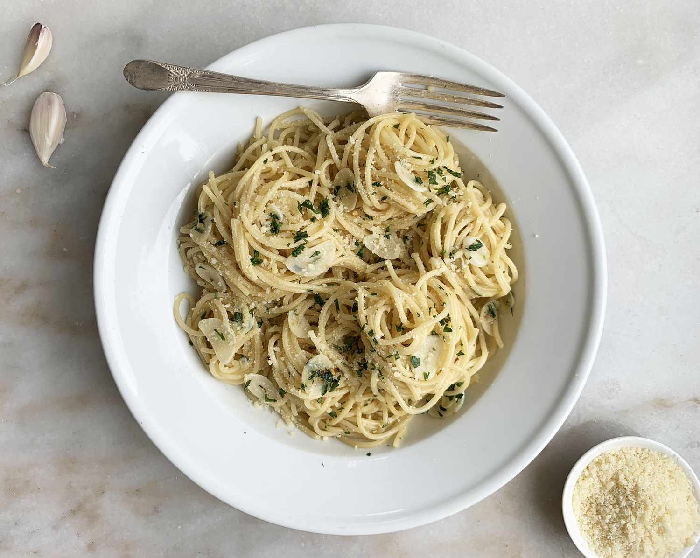

Spaghetti aglio e olio

Description
Spaghetti aglio e olio is a pasta dish typical of the city of Naples,
Italy. It is popular because it is simple to prepare and makes use of
inexpensive, readily available ingredients that have long shelf lives in a
pantry. The dish was once also known as vermicelli alla Borbonica.
Ingredients
- Salt
- Spaghetti
- 3 cloves garlic, minced
- 1/2 cup extra-virgin olive oil
- Pinch red pepper flakes
- 2 tablespoons chopped flat-leaf parsley
- 1/2 lemon, zested, optional
- Freshly grated Parmigiano-Reggiano, optional
Steps
-
Bring a large pot of cold water to a boil over high heat, then salt it
generously. Add the pasta and cook, stirring occasionally until al
dente, tender but not mushy, about 8 minutes.
-
While the pasta cooks, combine the garlic, olive oil, 1 teaspoon salt
and the red pepper flakes in a large skillet and warm over low heat,
stirring occasionally, until the garlic softens and turns golden, about
8 minutes.
-
Drain the pasta in a colander set in the sink, reserving about a 1/4 cup
of the cooking water. Add the pasta and the reserved water to the garlic
mixture. Mix well. Add the parsley and lemon zest (if using). Adjust
seasoning, to taste. Transfer to a large serving bowl or divide amongst
4 to 6 dishes. Serve topped with grated cheese, if desired.
Home